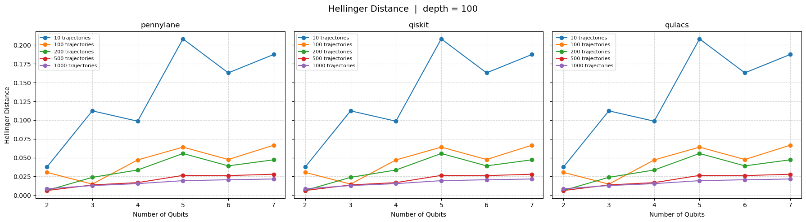

Method Verification
In this script, the probabilities from the MCWF method is compared against the probabilities from a density matrix simulation to validate the MCWF method as a valid implementation for noisy statevector simulations.
Import Libraries
[1]:
from NoisyCircuits import QuantumCircuit as QC
from NoisyCircuits.utils.CreateNoiseModel import GetNoiseModel, CreateNoiseModel
import numpy as np
import matplotlib.pyplot as plt
import pickle
import os
import json
2026-03-10 14:54:22,220 INFO util.py:154 -- Missing packages: ['ipywidgets']. Run `pip install -U ipywidgets`, then restart the notebook server for rich notebook output.
Initialize the Noise Model
[2]:
api_json = json.load(open(os.path.join(os.path.expanduser("~"), "ibm_api.json"), "r"))
token = api_json["apikey"] # Replace with your Token
service_crn = api_json["service-crn"] # Replace with your Service CRN
backend_name = "ibm_marrakesh"
qpu_type = "heron"
verbose = False
Run the code below to use the latest noise model from IBM hardware calibration data
[3]:
noise_model = GetNoiseModel(
backend_name=backend_name,
token=token,
service_crn=service_crn,
).get_noise_model()
Run the code below in case API access is not feasible, and use the sample noise model provided with the software
[ ]:
if qpu_type == "eagle":
file_path = "https://raw.githubusercontent.com/Sats2/NoisyCircuits/main/noise_models/Noise_Model_Eagle_QPU.pkl"
noise_model = pickle.load(open(file_path, "rb"))
elif qpu_type == "heron":
file_path = "https://raw.githubusercontent.com/Sats2/NoisyCircuits/main/noise_models/Sample_Noise_Model_Heron_QPU.csv"
noise_model = CreateNoiseModel(calibration_data_file=file_path,
basis_gates=[["x", "sx", "rz", "rx"], ["cz", "rzz"]]).create_noise_model()
else:
raise ValueError("Invalid qpu_type. Choose either 'heron' or 'eagle'.")
Define the Randomized Circuit
Define the function that can generate a randomized circuit that can be executed using density matrix simulation and as an MCWF execution.
[4]:
def build_random_circuit(circuit, depth, num_qubits):
circuit.refresh()
if qpu_type == "eagle":
gate = {
"X" : circuit.X,
"SX": circuit.SX,
}
two_qubit_gate = circuit.ECR
elif qpu_type == "heron":
gate = {
"X" : lambda q: circuit.X(q),
"SX": lambda q: circuit.SX(q),
"RX": lambda q: circuit.RX(np.random.uniform(-2*np.pi, 2*np.pi), q)
}
two_qubit_gate = circuit.CZ
else:
raise ValueError("Unsupported QPU type. Supported types are 'heron' and 'eagle'.")
for _ in range(depth):
for i in range(num_qubits):
choice = np.random.choice(list(gate.keys()))
gate[choice](i)
for i in range(num_qubits-1):
two_qubit_gate(i, i+1)
Define the Metrics
Define the function that can compute the desired validation metrics between the reference probability distribution (from the density matrix) and the probability distribution from the MCWF method. The chosen metrics are:
Battacharyya Coefficient: Defines the overlap between two probability distributions and is bounded between \([0,1]\), where a value of \(1\) indicates a similar distributions. The value for two discrete distributions can be computed using the equation below. \begin{equation*} BC(p,q) = \sum_{i=1}^{N} \sqrt{p_iq_i} \end{equation*} Interpretation: The closer the two distributions are in similarity, the closer value of the Battacharyya Coefficient is to \(1\).
Battacharyya Distance: Provides a distance measure that indicates the dissimilarity between two probability distributions and lies between \([0, \infty]\), where a value of \(0\) indicates a similar distribution and higher the value, the greater the dissimilarity between the two distributions. The value for two discrete distributions can be computed using the equation below. \begin{equation*} BD(p,q) = -\text{log}(BC(p,q)) \end{equation*}
Hellinger Distance: Provides a measure of the geometric difference between two probability distributions and is bounded between \([0,1]\), where a value of \(0\) indicates a similar distribution. The value for two discrete distributions can be computed using the equation below. \begin{equation*} HD(p,q) = \frac{1}{\sqrt{2}} \sqrt{\sum_{i=1}^{N}(\sqrt{p_i} - \sqrt{q_i})^2} \end{equation*}
Jenson-Shannon (JS) Divergence: It is the smoothed, symmetric version of the KL divergence, measuring the average information divergence between the two distributions and is bounded between \([0, \text{log}(2)]\) where lower the value the lesser the information loss. The value for two discrete distributions can be computed using the equation below. \begin{equation*} JSD(p||q) = \frac{1}{2}(KL(p||m) + KL(q||m)) \text{ with } m = \frac{p+q}{2} \end{equation*}
\begin{equation*} KL(a||b) = \sum_{i=1}^{N}a_i\text{log}(\frac{a_i}{b_i}) \end{equation*}
[5]:
def compute_metrics(pd_1, pd_2):
battacharyya_coefficient = np.sum(np.sqrt(pd_1 * pd_2))
battacharyya_distance = -np.log(battacharyya_coefficient)
hellinger_distance = np.sqrt(np.sum((np.sqrt(pd_1) - np.sqrt(pd_2))**2)) / np.sqrt(2)
m = 0.5 * (pd_1 + pd_2)
js = 0.5 * np.sum(pd_1 * np.log(1e-10 + pd_1 / m) + pd_2 * np.log(1e-10 + pd_2 / m))
return (battacharyya_coefficient, battacharyya_distance, hellinger_distance, js)
[ ]:
def plot(data, metric_name, depth):
metric_list = ["Battacharyya Coefficient", "Battacharyya Distance", "Hellinger Distance", "Jensen-Shannon Divergence"]
trajectory_list = [10, 100, 200, 500, 1000]
metric_index = metric_list.index(metric_name)
solvers = ["pennylane", "qiskit", "qulacs"]
qubit_list_plot = sorted(set(q for (q, d) in data[solvers[0]].keys()))
fig, axes = plt.subplots(1, 3, figsize=(18, 5), sharey=True)
fig.suptitle(f"{metric_name} | depth = {depth}", fontsize=14)
for ax, solver in zip(axes, solvers):
for traj_idx, n_traj in enumerate(trajectory_list):
values = [
data[solver][(q, depth)][traj_idx][metric_index]
for q in qubit_list_plot
if (q, depth) in data[solver]
]
qubits_available = [q for q in qubit_list_plot if (q, depth) in data[solver]]
ax.plot(qubits_available, values, marker="o", label=f"{n_traj} trajectories")
ax.set_title(solver)
ax.set_xlabel("Number of Qubits")
ax.set_xticks(qubit_list_plot)
ax.legend(fontsize=8)
ax.grid(True, linestyle="--", alpha=0.5)
axes[0].set_ylabel(metric_name)
plt.tight_layout()
plt.show()
[7]:
def run_experiment(circuit, qubits, depth, log):
metrics_identifiers = ["Battacharyya Coefficient", "Battacharyya Distance", "Hellinger Distance", "Jensen-Shannon Divergence"]
log.write("====="*20 + "\n")
log.write(f"Running Circuit with {qubits} qubits and depth {depth}\n")
p_ref = circuit.run_with_density_matrix(list(range(qubits)))
p_10t = circuit.execute(qubits=list(range(qubits)), num_trajectories=10)
p_100t = circuit.execute(qubits=list(range(qubits)), num_trajectories=100)
p_200t = circuit.execute(qubits=list(range(qubits)), num_trajectories=200)
p_500t = circuit.execute(qubits=list(range(qubits)), num_trajectories=500)
p_1000t = circuit.execute(qubits=list(range(qubits)), num_trajectories=1000)
metrics_10t = compute_metrics(p_ref, p_10t)
metrics_100t = compute_metrics(p_ref, p_100t)
metrics_200t = compute_metrics(p_ref, p_200t)
metrics_500t = compute_metrics(p_ref, p_500t)
metrics_1000t = compute_metrics(p_ref, p_1000t)
traj_list = [10, 100, 200, 500, 1000]
for traj, metric in enumerate([metrics_10t, metrics_100t, metrics_200t, metrics_500t, metrics_1000t]):
log.write(f"Metrics for MCWF with {traj_list[traj]} trajectories:\n")
for identifier, value in zip(metrics_identifiers, metric):
log.write(f"{identifier}: {value}\n")
log.write("====="*20 + "\n\n")
log.flush()
return metrics_10t, metrics_100t, metrics_200t, metrics_500t, metrics_1000t
Define Randomized Test Parameters
Define the range for the number of qubits to use and the total number of single qubit gates per qubit. Note that an entanglement gate is applied to after each single qubit gate (recommended to start with 2 qubits).
[8]:
qubit_list = [2, 3, 4, 5, 6, 7]
depth_list = [5, 20, 50, 100]
[ ]:
log_qulacs = open("Results_Log_File_qulacs.log", "w")
log_qiskit = open("Results_Log_File_qiskit.log", "w")
log_pennylane = open("Results_Log_File_pennylane.log", "w")
data = {
"pennylane" : {},
"qulacs" : {},
"qiskit" : {}
}
log_files = {
"pennylane": log_pennylane,
"qulacs": log_qulacs,
"qiskit": log_qiskit
}
for qubits in qubit_list:
for depth in depth_list:
circuit_list = None
for solver in ["pennylane", "qiskit", "qulacs"]:
circuit = QC(
num_qubits=qubits,
noise_model=noise_model,
backend_qpu_type=qpu_type,
num_trajectories=1,
num_cores=60,
sim_backend=solver,
jsonize=True,
verbose=False,
threshold=1e-4
)
if circuit_list is None:
build_random_circuit(circuit, depth, qubits)
circuit_list = circuit.instruction_list
else:
circuit.instruction_list = circuit_list
metrics = run_experiment(circuit=circuit, qubits=qubits, depth=depth, log=log_files[solver])
circuit.shutdown()
data[solver][(qubits, depth)] = metrics
for solver in ["pennylane", "qiskit", "qulacs"]:
log_files[solver].close()
[10]:
plot(data, "Hellinger Distance", depth=100)

Download this Notebook - /theory/verification/method_verification.ipynb